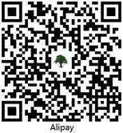

MolAICal
MolAICal is a drug design software combined by artificial intelligence and classical programming. MolAICal is freely for education, academic and other non-profit purposes. If you want to use MolAICal for any commercial purpose, you should contact with licensors (Email: molaical@yeah.net).
Project Leader and Developer
Qifeng Bai
School of Basic Medical Sciences
Lanzhou University
Lanzhou 730000, Gansu, P. R. China
Email: molaical@yeah.net
 https://orcid.org/0000-0001-7296-6187
https://orcid.org/0000-0001-7296-6187
Add issues
If the official Github site of MolAICal is not visited very well in China, Chinese users can use the Gitee mirror of MolAICal: https://molaical.gitee.io
The blogs of MolAICal are listed as below:
Twitter: https://twitter.com/MolAICal
Chinese blog of MolAICal: https://molaical.gitee.io/cntutorial.html or https://blog.csdn.net/MolAICal
If you have any problem, please add issues with english words on: Issues,
or add issues with chinese words on: Issues.
Besides, welcome to join the QQ group for academic discussion, QQ group No.: 1151656349
Download: Version 1.1.2 Release Online (2021-12-19)
The win64 and linux64 versions of MolAICal are released, users can download one version according to your operating system. Users can choose one of below seven routes for downloading MolAICal. If you have any download problem, please contact the author.
1. Amazon: Download
2. Mediafire: Download
3. Onedrive: Download
4. zenodo: Download
5. Google Drive: Download
6. Weiyun: Download
7. Baidu: Download, password: kd3v
Development version: Download Update on 2021-12-20
Citing MolAICal
If MolAICal is used in your work, please cite the below two papers:
1. Bai, Q., et al. MolAICal: a soft tool for 3D drug design of protein targets by artificial intelligence and classical algorithm. Briefings in Bioinformatics, doi:10.1093/bib/bbaa161
https://doi.org/10.1093/bib/bbaa161 Download: [EndNote style]
2. Bai, Q. Research and development of MolAICal for drug design via deep learning and classical programming. arXiv preprint arXiv:2006.09747 (2020).
https://arxiv.org/abs/2006.09747 Download: [EndNote style]
Manual
Route 1: Manual. If route 1 breaks down, please use route 2: Manual.
News
20-October-2021: WIREs Advanced Science News report MolAICal and our AI points for drug discovery: https://www.advancedsciencenews.com/ai-for-drug-discovery-what-can-we-do.
14-October-2021: Our paper has been published on WIREs Computational Molecular Science: https://wires.onlinelibrary.wiley.com/doi/full/10.1002/wcms.1581, "Application advances of deep learning methods for de novo drug design and molecular dynamics simulation". The developed direction of MolAICal will be along with the idea of this paper.
14-June-2021: A webserver based on partial functions of MolAICal is online (see: https://doi.org/10.1016/j.csbj.2021.06.017): "WADDAICA: a webserver for aiding protein drug design by artificial intelligence and classical algorithm". More news: News.
26-August-2020: MolAICal received "Anti-epidemic Special Award" in Chinese Academy of Sciences (CAS) Pilot Cup Parallel Computing Application Grand Prix. http://www.chinanews.com/gn/2020/07-10/9234944.shtml More news: News.
Donate MolAICal
MolAICal is free for education, academic and non-profit purposes, and it needs the capital for sustainable development. If you would like MolAICal to become better, you can choose anyone of below options for supporting MolAICal:
1) Provide relative research grant or fund for MolAICal. Contact email: molaical@yeah.net
2) Donate MolAICal by scanning QR Code of WeChat Pay, Alipay or QQ Pay:

Thanks for your warming donation and help.
Webserver
A webserver named WADDAICA is as part functions of MolAICal: https://bqflab.github.io
Acknowledgement
We acknowledge "Tencent AI Lab Rhino-Bird Focused Research Program (No. JR202004)" supports the grant for study of drug deep graph learning model. We acknowledge Suzhou Supercomputing Center (siscc), Shanghai SuperComputing Technology Co.,Ltd. and GanSu Computing Center supply the computing resource for drug design of COVID-19 main protease by using MolAICal. We acknowledge Vinardo score discussion from Dr. Ximing Xu who works at Pilot National Laboratory for Marine Science and Technology (Qingdao).